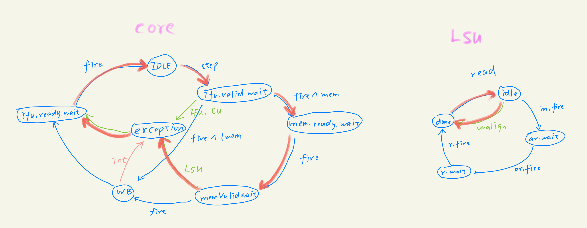
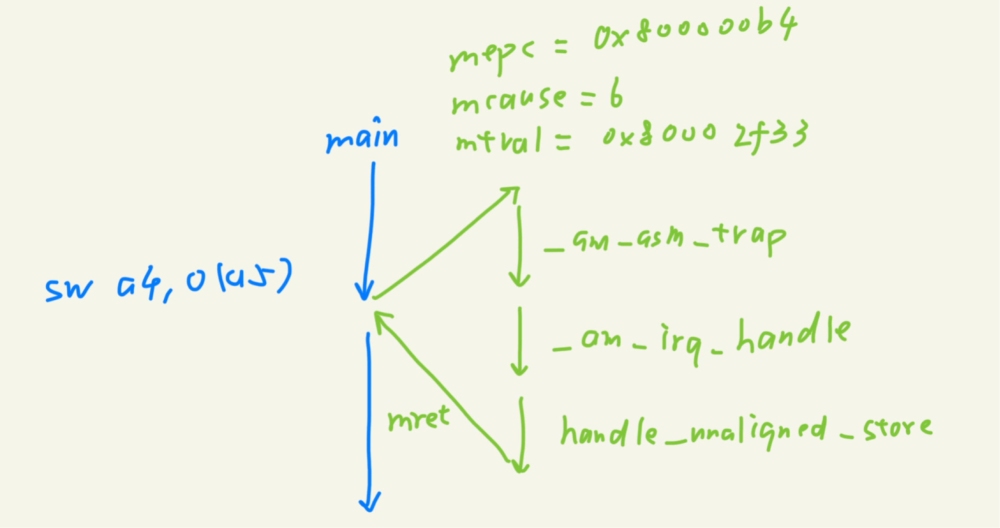

一生一芯 C 阶段结业答辩
姓名：王靳
学校：哈尔滨工业大学（深圳）
从 hello world 窥探 NEMU+AM 的协同工作
am-tests: make run mainargs=h
0x80000000: call [_start@0x8000_0000] <- pc 初始化的位置, 初始化 trm
0x8000000c: call [_trm_init@0x80001ac4] <- 初始化 trm, 并跳转到 main
0x80001adc: call [main@0x80000010]
0x800001d8: call [printf@0x80003f04] <- 调用 klib 中的 printf
0x80003f54: call [vprintf@0x80005408]
0x8000543c: call [__vprintf@0x80004a44]
0x80004ab4: call [vprintf_helper@0x80005458]
0x80005498: call [putch@0x80001a60]
0x80001a84: call [outb@0x80001a24] <- mmio, 串口输出
Hello, AM World @ riscv32
NEMU初始化PC=0x8000_0000, 这个时候开始运行 _start 处的代码
那为什么0x8000_0000处就是_start呢?
这需要两方面的努力: 链接器、装载器
这里的装载器可以理解为一个nvm的ram(物理地址)
// nemu/src/isa/riscv32/init.c
void init_isa() {
memcpy(guest_to_host(RESET_VECTOR), img, sizeof(img)); /* init ram */
restart(); /* reset pc */
}
链接器需要确定程序的逻辑地址
ENTRY(_start) /* (1) set _start as entry */
PHDRS { text PT_LOAD; }
SECTIONS {
/* 其中 _pmem_start, _entry_offset 是给链接器传的参数 */
. = _pmem_start + _entry_offset;
.text : {
*(entry) /* (2) put entry */
*(.text*)
} : text
etext = .; _etext = .;
}
NEMU复位后, PC指向0x8000_0000, 开始执行 _start 处的代码
_start:
mv s0, zero
la sp, _stack_pointer
call _trm_init
调用 _trm_init, 然后 _trm_init 又调用 main
extern int main(const char *args);
void _trm_init() {
int ret = main(mainargs);
halt(ret);
}
其中 main 是一个外部函数, 也就是 am-kernels 中定义的五彩缤纷的应用程序
从 hello world 窥探 Makefile 的层层展开
当我们键入下面这条命令时, 发生了什么?
kernels/demo> make ARCH=riscv32-nemu run mainargs=h
am-kernels/kernels/demo/Makefile
abstract-machine/Makefile
DEPENDENCIES.d
abstract-machine/scripts/riscv32-nemu.mk
abstract-machine/scripts/isa/riscv.mk
abstract-machine/scripts/platform/nemu.mk
abstract-machine/scripts/platform/sim.mk # 抽取了仿真平台通用的结构
LIB_TEMPLATE:
abstract-machine/klib/Makefile
abstract-machine/am/Makefile
run: nemu/Makefile
FILELIST_MK
nemu/include/config/auto.conf
nemu/include/config/auto.conf.cmd
nemu/scripts/native.mk
nemu/scripts/config.mk
nemu/scripts/build.mk
DEPENDENCIES.d
nemu/tools/difftest.mk
YSYX_ROOT/Makefile # 用于跟踪 git commit
从 hello world 窥探 printf 的实现 (nemu)
0x800001d8: call [printf@0x80003f04] <- 调用 klib 中的 printf
0x80003f54: call [vprintf@0x80005408]
0x8000543c: call [__vprintf@0x80004a44]
0x80004ab4: call [vprintf_helper@0x80005458]
0x80005498: call [putch@0x80001a60]
0x80001a84: call [outb@0x80001a24] <- mmio, 串口输出
[host]: decode_exec
[host]: vaddr_write
[host]: paddr_write
[host]: mmio_write
[host]: map_write
[host]: invoke_callback -> serial_io_handler
[host]: serial_putc -> putc
从 hello world 窥探 printf 的实现 (npc)
0x800001d8: call [printf@0x80003f04] <- 调用 klib 中的 printf
0x80003f54: call [vprintf@0x80005408]
0x8000543c: call [__vprintf@0x80004a44]
0x80004ab4: call [vprintf_helper@0x80005458]
0x80005498: call [putch@0x80001a60]
0x80001a84: call [outb@0x80001a24] <- mmio, 串口输出
[host]: [译码]
[host]: [访存]
[host]: [AXI4-Lite总线桥]
[host]: [AXI4LiteUartSlave]
[host]: [printf]
单周期硬件框图

多周期硬件框图

多周期状态机（整体）

IFU状态机

LSU状态机

AXI4Lite总线Slave状态机

考核题目：充分理解打字小游戏
最复杂的应用：修复 misaligned memory access
我认为最复杂的程序可能还不是 rt-thread-am, 他只是利用了 ecall 和 mret
我认为最复杂的程序应该是 misaligned memory access
他涉及到访存异常, 并跳转到异常处理函数, 并把相应的字节搬到正确的内存上
硬件方面, 访存异常处理相关的状态机
访存异常修复流程
访存异常修复伪代码
int main() { cte_init(handler); unaligned_access(); }
Context* __am_irq_handle(Context *c) {
switch(mcause) {
case 4: handle_unaligned_load(c); break;
}
}
static void handle_unaligned_load(Context *c) {
addr = mtval;
[funct3, rd] = decode(mem[mepc]);
switch (funct3) {
case 2: // LW - load word
value = *(uint8_t *)addr |
(*(uint8_t *)(addr + 1) << 8) |
(*(uint8_t *)(addr + 2) << 16) |
(*(uint8_t *)(addr + 3) << 24);
break;
}
gpr[rd] = value;
mepc += 4;
}
构建NPC时, 通过Copy-Paste, 复制了nemu的代码, 并将里面解释执行的部分, 替换成了verilator仿真执行的部分
// npc/src/cpu/cpu-exec.c
static void execute(uint64_t n) {
for (; n > 0; n--) {
if (!exec_once(&s)) {
set_npc_state(NPC_ABORT, cpu.pc, -1);
break;
}
}
}
static bool exec_once(Decode *s) {
return npc_core_step(s);
}
// npc/src/cpu/core.cc
extern "C" bool npc_core_step(Decode *s) {
top->io_step = 1;
const int MAX_CYCLES = 1000; int cycles = 0;
do {
tick();
cycles++;
if (cycles >= MAX_CYCLES) {
return false;
}
} while (!top->io_debug_valid);
read_debug_to_decode(s); cpu.pc = s->dnpc;
sync_gpr_to_cpu(); sync_csr_to_cpu();
top->io_step = 0; top->eval();
return true;
}